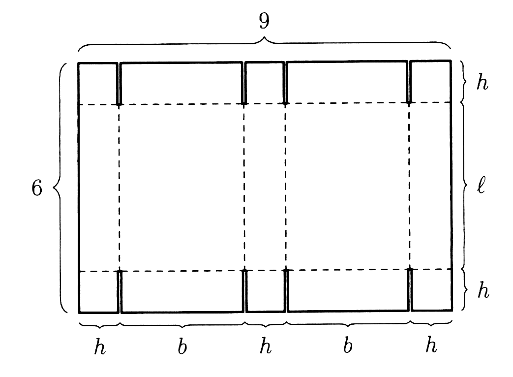
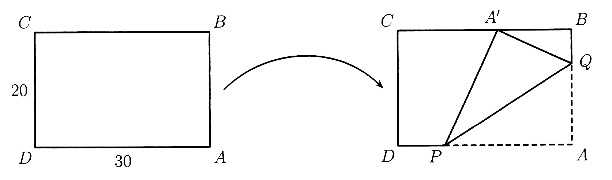

Kent Lundgren — uppdaterad den 1 nov 2026
Prompt till andra AI-modeller
En färdig prompt med alla nio uppgifterna ur tentan Endimensionell analys B1, Lunds tekniska högskola (LTH), 2026-10-30. Jag skickar den till andra AI-modeller (språkmodeller, LLM) för att se om de kan lösa uppgifterna på egen hand, få rätt svar och redovisa dem så tydligt att de inte kan missförstås.
Prompten innehåller inga svar och inga ledtrådar. Tentatexten är avläst ur den skannade PDF:en och figurerna är beskurna ur skanningen. Prompten är inte provkörd på någon modell än. Kontrollera mot källan innan något återges.
Så använder jag den
- Nytt, tomt samtal för varje modell, så att inget tidigare samtal påverkar svaret.
- Välj variant. A: kopiera prompt A. Kan modellen ta emot bilder bifogar jag de två figurerna från Figurerna, Figur 1 först, annars räcker textbeskrivningarna i prompten. B: kopiera prompt B och bifoga PDF:en som fil. Helst körs båda varianterna med samma modell.
- Inga följdfrågor och ingen rättning. Svaret jag får är svaret som bedöms. Gärna tre körningar per modell, eftersom svaren kan skilja sig mellan körningar.
- Anteckna modell, version, datum och om modellens "tänkande" var på. Jag stänger av webbsökning där det går. Resultaten förs in i Tabell 1.
Prompt A: text och figurbeskrivning
Det finns två varianter. Variant A (den här) ger modellen tentatexten som text, med figurerna beskrivna i ord och som bifogade bilder. Den mäter matematiken och är rättvis mot modeller som inte kan läsa en skannad PDF. Variant B (längre ned) ger bara den skannade tentan som PDF-fil. Den mäter läsning och lösning tillsammans, som när en student får papperet. Skillnaden mellan A och B visar hur mycket av felen som kommer från läsningen. Båda är på svenska, som tentan. Rutorna är grå eftersom texten är låst: det är ingen inmatning.
Du ska lösa en skriftlig tentamen i endimensionell analys, den första matematikkursen på en teknisk högskola (Lunds tekniska högskola, tentamen 2026-10-30). Det är nio uppgifter. Jag vill se hur väl du löser dem på egen hand och hur tydligt du redovisar svaren.
REGLER
1. Lös uppgifterna själv.
Sök inte på nätet efter uppgifterna eller efter lösningar till dem, och använd inte en färdig lösning om du ändå skulle se en. Lös uppgifterna själv och redovisa vad du kom fram till. Känner du igen uppgifterna eller en lösning av dem, säg det och ange varifrån.
2. Hjälpmedel.
På den riktiga tentan var inga hjälpmedel tillåtna. Du får här använda hjälpmedel (till exempel kod, räknare eller symbolisk algebra), men du ska redovisa vilka du har använt, uppgift för uppgift. Använder du kod, visa koden eller beskriv kort vad du räknade ut. Motivera ändå lösningen så att en mänsklig rättare kan följa den utan hjälpmedel.
3. Figurer.
Uppgift 6 och 9 har figurer. Varje figur finns både som bild (bifogad, om du kan ta emot bilder) och som textbeskrivning nedan. Börja varje sådan uppgift med att skriva hur du tolkar figuren. Skiljer sig bilden från beskrivningen, säg det och utgå från bilden. Uppgift 7 har ingen figur i originalet. Bifogade bilder, om du kan se dem: Bild 1 är figuren i uppgift 6 och Bild 2 är figuren i uppgift 9.
4. Språk och skrivsätt.
Svara på svenska. Skriv matematiken så att den går att läsa som ren text (till exempel sqrt(3), 1/8, pi/2, x^2) eller med LaTeX. Slutsvaren ska stå i exakt form (till exempel 5*sqrt(3) och inte bara 8,66), gärna med ett närmevärde i parentes.
5. Var ärlig om osäkerhet.
Gissa inte tyst. Är du osäker, säg det och förklara varför. Hittar du ett fel i din egen lösning, rätta det och säg att du gjort det.
SVARSMALL
För varje uppgift 2–9, använd exakt den här mallen:
Uppgift N
Tolkning: (hur du läser uppgiften och, i uppgift 6 och 9, figuren)
Metod: (en mening: vilken metod du använder, till exempel "derivering och teckentabell")
Lösning: (stegen, med motiveringar)
Kontroll: (en kontroll som inte bara är samma räkning en gång till, till exempel insättning, ett specialfall eller en annan metod)
Svar: (en enda rad med slutsvaret)
Hjälpmedel: inga | kod/räknare | webbsökning eller uppslag | annat (ange vilket)
Säkerhet: hög | medel | låg, och en mening om varför
Uppgift 1 ska bara besvaras med svar, utan lösning, så som uppgiften säger. Skriv en rad per delfråga ("1a Svar: ...", "1b Svar: ..." och så vidare) och därefter en rad "Hjälpmedel: ..." för hela uppgift 1.
Uppgift 3: skriv definitionen respektive resultatet på raden Svar: och ge härledningen under Lösning.
Uppgift 4 och 8 ber om en skiss. Du kan inte rita, så beskriv grafen i ord, ange nyckelpunkter med koordinater och gör gärna en enkel textskiss eller värdetabell. Svara dessutom uttryckligen på det uppgiften frågar efter (extrempunkter, asymptoter, punkter där funktionen inte är deriverbar).
Avsluta med en sammanfattningstabell med en rad per delsvar:
| Uppgift | Slutsvar | Hjälpmedel | Säkerhet |
och därefter två rader:
Källor utöver din egen räkning: inga | ja (vilka)
Övrigt som jag bör veta: (valfritt)
TENTAN
LUNDS TEKNISKA HÖGSKOLA, MATEMATIK
TENTAMENSSKRIVNING, ENDIMENSIONELL ANALYS B1
2026-10-30 kl. 14.00–19.00
Så stod det på tentan: INGA HJÄLPMEDEL. Varje uppgift kan som mest ge 3 poäng. Lösningarna ska vara försedda med ordentliga motiveringar. Ge tydliga och enkla svar där så är möjligt.
Godkäntdel
För att bli godkänd och erhålla betyg 3 krävs minst 9 poäng på denna del, samt 0 poäng på högst en av dessa sex uppgifter.
1. Till denna uppgift ska endast svar anges. Eventuella fullständiga lösningar kommer inte att bedömas. 0–3 rätt ger 0 poäng på uppgiften, 4 rätt ger 1 poäng, 5 rätt ger 2 poäng och 6 rätt ger 3 poäng.
a) Bestäm en ekvation för linjen som går genom punkten (3, 5) och är parallell med linjen 2x + y = 1.
b) Kvadratkomplettera uttrycket x^2 − 10x + 19.
c) Förenkla ²log 6 − ²log 8 − ²log 3. (Förtydligande: ²log betyder logaritmen med bas 2.)
d) Lös olikheten 3 < 4/(x + 1).
e) Beräkna binomialkoefficienten (8 över 5), det vill säga "8 välj 5".
f) Låt f(x) = sin(arctan x). Beräkna f′(√3).
2. Lös ekvationen
x|x − 8| = |x + 5| + 5.
3.
a) Definiera vad som menas med att funktionen f är kontinuerlig i punkten a.
b) Härled derivatan av funktionen g(x) = x^5.
4. Skissera grafen till funktionen
f(x) = 4/x − x + 5 ln x, x > 0.
Ange särskilt eventuella lokala extrempunkter och asymptoter.
5. Beräkna gränsvärdena
a) lim (x → ∞) (5e^x + x^2) / (3^x − ln x)
b) lim (x → 0) (x^2 + x + ln(1 + x)) / (4x^3 − 3x)
c) lim (x → 1) (x^2 − 1) / (2x^3 + x^2 − 3)
6. Figuren nedan visar en ritning av hur en låda kan tillverkas av en rektangulär pappskiva med måtten 6 dm × 9 dm. Lådan får formen av ett rätblock, och beteckningarna i figuren anger lådans längd ℓ, bredd b och höjd h. Lådans volym V ges därmed av V = ℓbh. Bestäm lådans dimensioner så att dess volym blir maximal. (Du behöver inte förstå hur lådan konstrueras för att lösa uppgiften.)
[Figurbeskrivning, uppgift 6 (Bild 1): Figuren visar en rektangulär pappskiva, liggande, med bredden 9 (markerad med klammer ovanför) och höjden 6 (markerad med klammer till vänster), båda i dm. Längs högra sidan är höjden uppdelad uppifrån och ned i tre delar märkta h, ℓ och h. Längs nedre sidan är bredden uppdelad från vänster till höger i fem delar märkta h, b, h, b och h. Två streckade vågräta linjer går tvärs över hela skivan, vid gränserna mellan den övre h-delen och ℓ-delen respektive mellan ℓ-delen och den nedre h-delen. Fyra streckade lodräta linjer går mellan de två vågräta, vid gränserna mellan delarna längs nedre sidan (efter första h, efter första b, efter andra h och efter andra b). I den översta och den understa h-remsan fortsätter de fyra lodräta linjerna som kortare, kraftigare heldragna linjer från den streckade linjen ut till skivans kant. Skivans ytterkant är heldragen.]
Överbetygsdel
Om du klarat godkäntdelen har du chans att få överbetyg. Om du fått minst 14 poäng på föregående del så får du 1 bonuspoäng tillgodo här. För betyg 4 krävs minst 3 poäng på denna del; för betyg 5 minst 6 poäng.
7. I triangeln ABC skär bisektrisen till ∠A sidan BC i punkten D. Beräkna längden av BD då AB = 3, AC = 4 och AD = 2.
8. Låt
f(x) = arcsin(cos x) + arccos(sin x).
Ange alla x ∈ R för vilka f inte är deriverbar, och skissera grafen till f.
9. Ett rektangulärt pappersark med måtten 20 cm × 30 cm viks, enligt figuren nedan, så att hörnet A hamnar i punkten A′ på sidan BC. Arket viks längs sträckan PQ, där punkterna P och Q ligger på sidorna AD respektive AB. Bestäm den minsta möjliga längden av PQ.
[Figurbeskrivning, uppgift 9 (Bild 2): Figuren har två delar med en böjd pil från den vänstra till den högra. Vänstra delen är en liggande rektangel med hörnen märkta C (övre vänstra), B (övre högra), D (nedre vänstra) och A (nedre högra). Den vänstra sidan CD är märkt 20 och den nedre sidan DA är märkt 30. Högra delen visar samma rektangel efter vikningen, med hörnen C (övre vänstra), B (övre högra), D (nedre vänstra) och A (nedre högra). På övre sidan CB ligger punkten A′ mellan C och B. På nedre sidan DA ligger punkten P, och på högra sidan BA ligger punkten Q. Tre heldragna sträckor är ritade: PQ, PA′ och A′Q, som tillsammans bildar en triangel. Två streckade sträckor är ritade: från P längs nedre sidan till A och från A upp längs högra sidan till Q.]
SLUT PÅ TENTAN. Börja nu med uppgift 1 och använd svarsmallen.
Prompt B: den skannade tentan som PDF
Här bifogar jag tentan som PDF-fil (två sidor, en skanning utan textlager) och klistrar in prompten nedan. Jag bifogar filen och länkar den inte: en modell utan webbläsning kan inte öppna en länk, och en länk i det här arkivet ligger bredvid guiden med svaren. Modeller som läser en PDF genom att plocka ut text får ingenting ur en skanning. Då ska modellen enligt prompten säga det och avbryta, och det räknas som att den inte kunde läsa filen, inte som fel matematik. Första steget är att modellen skriver av uppgifterna, så att jag kan jämföra avskriften med mitt facit och se om ett fel beror på läsningen eller på räkningen.
Bifogat finns en skannad tentamen i endimensionell analys (Lunds tekniska högskola, 2026-10-30) som en PDF-fil med två sidor. Det är nio uppgifter. Lös dem själv. Jag vill se hur väl du löser dem och hur tydligt du redovisar svaren.
STEG 1, LÄS
Skriv först av varje uppgift ordagrant som text, med delfrågor, och beskriv med några meningar vad figurerna i uppgift 6 och 9 visar. Kan du inte läsa filen, eller bara en del av den, säg det och avbryt, hellre än att gissa vad som står.
STEG 2, LÖS
REGLER
1. Lös uppgifterna själv.
Sök inte på nätet efter uppgifterna eller efter lösningar till dem, och använd inte en färdig lösning om du ändå skulle se en. Lös uppgifterna själv och redovisa vad du kom fram till. Känner du igen uppgifterna eller en lösning av dem, säg det och ange varifrån.
2. Hjälpmedel.
På den riktiga tentan var inga hjälpmedel tillåtna. Du får här använda hjälpmedel (till exempel kod, räknare eller symbolisk algebra), men du ska redovisa vilka du har använt, uppgift för uppgift. Använder du kod, visa koden eller beskriv kort vad du räknade ut. Motivera ändå lösningen så att en mänsklig rättare kan följa den utan hjälpmedel.
3. Språk och skrivsätt.
Svara på svenska. Skriv matematiken så att den går att läsa som ren text (till exempel sqrt(3), 1/8, pi/2, x^2) eller med LaTeX. Slutsvaren ska stå i exakt form (till exempel 5*sqrt(3) och inte bara 8,66), gärna med ett närmevärde i parentes.
4. Var ärlig om osäkerhet.
Gissa inte tyst. Är du osäker, säg det och förklara varför. Hittar du ett fel i din egen lösning, rätta det och säg att du gjort det.
SVARSMALL
För varje uppgift 2–9, använd exakt den här mallen:
Uppgift N
Tolkning: (hur du läser uppgiften och, i uppgift 6 och 9, figuren)
Metod: (en mening: vilken metod du använder, till exempel "derivering och teckentabell")
Lösning: (stegen, med motiveringar)
Kontroll: (en kontroll som inte bara är samma räkning en gång till, till exempel insättning, ett specialfall eller en annan metod)
Svar: (en enda rad med slutsvaret)
Hjälpmedel: inga | kod/räknare | webbsökning eller uppslag | annat (ange vilket)
Säkerhet: hög | medel | låg, och en mening om varför
Uppgift 1 ska bara besvaras med svar, utan lösning, så som tentan säger. Skriv en rad per delfråga ("1a Svar: ...", "1b Svar: ..." och så vidare) och därefter en rad "Hjälpmedel: ..." för hela uppgift 1.
Uppgift 3: skriv definitionen respektive resultatet på raden Svar: och ge härledningen under Lösning.
Uppgift 4 och 8 ber om en skiss. Du kan inte rita, så beskriv grafen i ord, ange nyckelpunkter med koordinater och gör gärna en enkel textskiss eller värdetabell. Svara dessutom uttryckligen på det uppgiften frågar efter (extrempunkter, asymptoter, punkter där funktionen inte är deriverbar).
Avsluta med en sammanfattningstabell med en rad per delsvar:
| Uppgift | Slutsvar | Hjälpmedel | Säkerhet |
och därefter två rader:
Källor utöver din egen räkning: inga | ja (vilka)
Övrigt som jag bör veta: (valfritt)
Börja nu med steg 1.
Figurerna
Figurerna hör till variant A. De är beskurna ur den skannade tentan (300 punkter per tum) och gråskalade. På skanningen lyser texten på pappersarkets baksida igenom som blek, spegelvänd text. Den är borttagen i de rensade kopiorna, som är de jag bifogar. Linjer, bokstäver och mått är orörda. De obearbetade beskärningarna finns som länk under varje figur. Uppgift 7 har ingen figur i originalet. Textbeskrivningarna av båda figurerna står i prompten.

Ladda ned den rensade bilden · ladda ned den obearbetade beskärningen



Ladda ned den rensade bilden · ladda ned den obearbetade beskärningen


Resultatmall
En rad per körning. Fyll i R för rätt, D för delvis rätt, F för fel och – om modellen inte svarade. Kolumnerna 1–9 är uppgifterna, där 3 räknas som en uppgift. I variant B noteras dessutom i anmärkningen om modellens avskrift av uppgifterna stämde. Jämförelsen sker mot de kontrollerade svaren i Tabell 2 i guiden (den innehåller alla svar). Mallen är en vanlig tabell, så den kopieras som markdown med knappen under tabellen och fylls i där resultaten förs.
| Modell | Version och datum | Var. | Körning | Sök på? | Hjälpm. | Källor? | 1 | 2 | 3 | 4 | 5 | 6 | 7 | 8 | 9 | Anmärkning |
|---|---|---|---|---|---|---|---|---|---|---|---|---|---|---|---|---|
Kan en modell hitta lösningen?
Det går inte att tvinga en modell att vara ärlig. Man kan be om redovisning och sedan kontrollera den mot det man kan se. Det här är vad jag vet och inte vet:
- Träningsdata. Tentan skrevs 2026-10-30. En modell som tränats före det datumet kan inte ha sett tentan eller våra svar. Det gäller bara modeller som inte söker på nätet.
- Webbsökning. En sökning med en söktjänst den 1 nov 2026, på en mening ur uppgift 6 och på sidans adress, gav inga träffar på tentan eller guiden. Det är en söktjänst vid ett enda tillfälle. Nya sidor tar tid att indexera, och guiden innehåller både uppgiftstexten och svaren. Sannolikheten går därför inte att ange i procent, och den kan ändras.
- Den säkraste åtgärden är att stänga av webbsökning och andra verktyg för körningen där modellen tillåter det, och notera det i Tabell 1.
- Så syns det om en modell ändå sökt eller kopierat. Gränssnittet visar ofta när en modell söker. Raden Hjälpmedel och raden Källor utöver din egen räkning i svaret säger det modellen själv uppger. Ett svar som följer vår lösning steg för steg, med samma egenheter, är ett tecken. Inget av detta är ett bevis.
- Prompten säger inte att lösningar finns. Regeln är formulerad som en vanlig tentaregel ("sök inte på nätet … om du ändå skulle se en"), så att den inte avslöjar att det finns lösningar att hitta.
- Redovisningen av hur modellen räknat behålls. Ett rätt slutsvar utan väg dit går inte att skilja från en gissning eller en kopia, och en tentalösning ska ha motiveringar. Slutsvaren är ändå lätta att jämföra, eftersom de står på en egen rad och i sammanfattningstabellen. Raden Metod är en mening som säger hur modellen räknat, och raden Hjälpmedel säger vilka verktyg den använt.
Hur svaren bedöms
Facit är de svar jag kontrollerat på flera sätt (se Så har svaren kontrollerats). Det finns inget officiellt facit för tentan, och ingen utomstående rättare har granskat mina lösningar. När en modell avviker från mitt svar utgår jag därför inte från att modellen har fel, utan granskar avvikelsen. Delvis rätt (D) betyder att metoden eller en del av svaret stämmer men slutsvaret inte gör det.
Det jag särskilt tittar på är om modellen tolkat uppgiften och figuren rätt (raden Tolkning), om den redovisar sina hjälpmedel, om den kontrollerat sitt svar, och om den uppger att den hittat en lösning av tentan. Vad som kan gå fel när en modell läser av och löser den här sortens uppgifter beskrivs i metafilen.